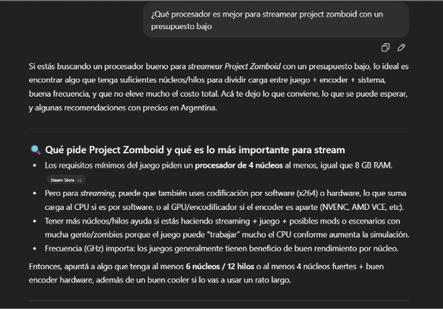
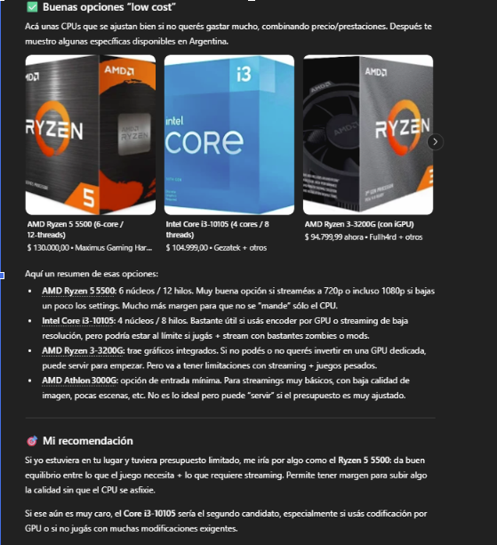
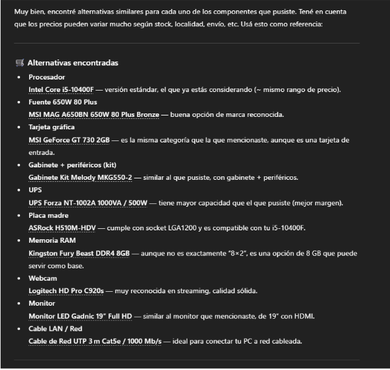
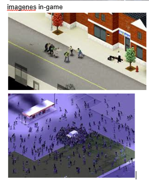

Buena base para poder stremear se desarrolla bien en la codificación.
185000$ Ver en MaximusEsencial para todo lo que engloba la compu.
89000$ Ver en NoxieStore(Componente gráfico para salida de video)
137000$ Ver en Parana HardwareCantidad mínima para poder tener una calidad decente de streaming.
54000$ (por 2x8GB) Ver en Gezatek (link por 1x8GB)(Para el sistema operativo y juegos)
59000$ Ver en FullH4rdBásica para poder aguantar los componentes con una certificación buena.
58000$ Ver en MaximusBásicos, no son necesarios alta calidad para poder disfrutar del juego.
43500$ Ver en MaximusEsencial para el entretenimiento.
35800$ Ver en MaximusEvitar quemar cosas de la computadora.
66000$ Ver en LibreOpcionNecesario para la conexión estable.
3500$ Ver en El QuintoPara stremear y compartir pantalla.
13000$ Ver en SteamEn mi opinión termine decidiendo por un i5 10400 para estar disponible por posibles actualizaciones y mejor rendimiento a la hora de codificar con el procesador para stremear y obtener una mejor calidad y fidelidad de imagen, dio buenas recomendaciones pero fui a un escalón más á propósito para estar preparado para el futuro.
En general con las cosas que elegí fueron para algo básico y un stream de no más de 1080p con el juego seleccionado y no sobre extenderse a otros juegos, simple y barato.
En el juego se espera un aproximado de 100 a 60 fps con una calidad de streaming 720p a 60fps.

Estas son otras opciones de compra en caso de no encontrar lo buscado anteriormente, con un precio similar o más barato.


A continuación, se muestra la portada oficial del juego seleccionado:
Captura de pantalla del gameplay:
